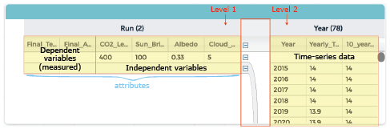

A variable is a general name for a values that changes. An independent variable is one that an experimenter can control. For example, the CO2 levels in this simulation is an independent variable.
A dependent variable is an outcome of the experiment such as the final global temperature at the end of the simulation.
Independent variables can also be called parameters or attributes. Each column in the data table below shows the values for variables such as time, distance, mass, or period. Columns can contain attributes that are set by the model or by your experiment, or that are the result of a measurement or calculation.
Each row in the table shows a run, which is the result of one experiment. Most runs consist of many samples collected over time. This is called a time-series. Each row also has the summary values for the run, such as temperature, CO2 levels, or years.

Note that there are two “levels” in the table: time series of a single run (on the left), and the summary attributes of different runs (on the right).